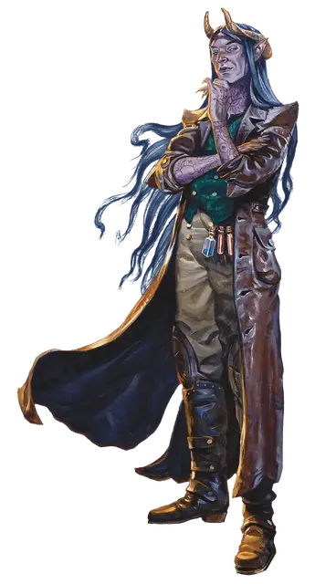

Ведьмовская кровь
Hexblood

Смотрите статью: Происхождения [Lineages]
Если невозможно достичь желаемого, древняя магия может помочь исполнить заветное — по крайней мере на какое-то время. Ведьмовская кровь — это личности, наделённые древней магией, энергией фей или таинственным колдовством. Если вступить в сделку с каргами, то осуществятся даже самые сокровенные желания, но с некоторыми изменениями. В этих изменениях чувствуется влияние карги: уши с раздвоенными будто вилка кончиками, кожа причудливых оттенков, длинные волосы, которые мгновенно отрастают, если их срезать, и неснимаемая живая корона. Наряду с этими признаками у ведьмовской крови проявляются черты карги, такие как тёмное зрение и разнообразные магические способы обмануть чувства и избежать того же в ответ.
Хотя многие из ведьмовской крови получают своё наследие после заключения сделки, у других истинная природа проявляется со временем, особенно если карга повлияла на них в раннем возрасте или даже до рождения. Многие из ведьмовской крови живут в поисках приключений, стремясь раскрыть тайны своей магии, установить связь со своей фейской стороной или избегать имеющую над ними власть каргу.
Наследник карг
Создание ведьмовской крови — один из способов, с помощью которого карги создают себе подобных. Каждая ведьмовская кровь имеет черты, напоминающие о той карге, чья магия питает его силы. К ним относится необычная корона, которую часто называют крестом старейшины или ведьминым кругом. Эта живая, напоминающая гирлянду часть тела ведьмовской крови тянется вдоль висков и обвивает голову. Служит зримым символом договора между ним и каргой, взятых обязательств или грядущих перемен.
Происхождение ведьмокровного
Сделка с каргой или другими жуткими силами преобразила вашего персонажа в магическое существо. Совершите бросок или выберите самостоятельно один из вариантов в таблице «Происхождение ведьмокровного», чтобы определить, как ваш персонаж мог получить данное происхождения.
Происхождение ведьмокровного
| к6 | Происхождение |
| 1 | Пытаясь зачать ребёнка, твой родитель заключил сделку с каргой. Вы — результат этой сделки. |
| 2 | Феи подменили вас и ребёнка ваших родителей. |
| 3 | Ковен потерял одного из своих членов. Вы были созданы, чтобы заменить ушедшую каргу. |
| 4 | В детстве вы были прокляты. Сделка с духами леса превратила тебя в ведьмовскую кровь, свободную от проклятия. |
| 5 | Вы начали жизнь как фейское существо, но несчастный случай изменил вас и заставил покинуть ваш дом. |
| 6 | Оскорблённый друид преобразил вас и обязал жить до тех пор, пока священное дерево будет приносить плоды. |
Становление каргой
Карги могут провести ритуал, чтобы необратимо трансформировать созданную ими ведьмовскую кровь в новую каргу, либо в один из своих собственных видов, воплощающих природу ведьмовской крови. Для этого необходимо, чтобы и карга, и ведьмовская кровь находились в одном и том же месте и дали согласие на длительный ритуал. Этих обстоятельств ведьмовская кровь старается избегать, но после многих столетий некоторые всё же соглашаются. После того как ведьмовская кровь проходит этот необратимый ритуал, она становится каргой под управлением Мастера, если только Мастер не решит иначе.
Ведьмовская кровь в Доменах Ужаса
При создании ведьмовской крови обсудите со своим Мастером, имеет ли смысл, чтобы ваш персонаж был связан с одним из следующих Доменов Ужаса (подробно описанных в главе 3):
Хазлан. Причудливая магия этого разрушающегося домена наделяет его жителей сверхъестественными силами, что иногда приводит к появлению ведьмовской крови.
Картакасс. В лесах Картакасса обитают эксцентричные ведьмы. Они охотно исполняют желания местных жителей, мечтающих о лучшей доле для своих детей.
Тепест. Многие дети в городе Виктал — ведьмовская кровь, чьи сверхъестественные способности проявляются ещё в раннем возрасте. Каждый ребёнок считается даром божества–покровителя города, которое известно как Мать.
Особенности ведьмовской крови
Вы обладаете следующими расовыми особенностями:
Увеличение характеристик. Либо значение одной характеристики по вашему выбору увеличивается на 2, а другой — на 1, либо значение трёх различных характеристик по вашему выбору увеличивается на 1.
Вид существа. Вы Фея.
Размер. Ваш размер — Маленький или Средний. Вы сами решаете, какого размера будете, когда получаете это происхождение.
Скорость. Ваша базовая скорость ходьбы составляет 30 футов.
Наследие предков. Если вы замените расу этим наследием, вы можете сохранить следующие элементы прежней расы: любые навыки и любые скорости лазания, полёта или плавания, которые вы получили от неё.
Если вы не оставите ни один из этих элементов или выберете это наследие при создании персонажа, вы получаете владение двумя навыками по вашему выбору.
Тёмное зрение. На расстоянии в 60 футов вы при тусклом освещении можете видеть так, как будто это яркое освещение, и в темноте так, как будто это тусклое освещение. В темноте вы не можете различать цвета, только оттенки серого.
Жуткий сувенир. Бонусным действием вы можете безо всякого вреда удалить прядь своих волос, ноготь или зуб. Этот сувенир наполнен магией, пока вы не закончите продолжительный отдых. Пока сувенир наполнен магией таким образом, вы можете совершить следующие действия:
Телепатическое послание. Действием вы можете послать мысленное сообщение существу, которое держит в руках или носит с собой сувенир, если вы находитесь в пределах 10 миль от него. В сообщении может быть до двадцати пяти слов.
Удалённое наблюдение. Если вы находитесь в пределах 10 миль от сувенира, вы можете действием войти в транс. Транс длится 1 минуту, но заканчивается раньше, если вы выйдете из него (действие не требуется) или окажетесь недееспособны. Во время этого транса вы можете видеть и слышать происходящее вокруг сувенира, как если бы вы лично находились там. Пока вы используете свои органы чувств в месте нахождения сувенира, вы ослеплены и глухи для окружающей вас среды. Когда транс заканчивается, сувенир уничтожается без каких-либо последствий.
Создав сувенир с помощью этой особенности, вы не можете сделать это снова, пока не закончите продолжительный отдых, после чего недостающая часть отрастёт.
Ведьмовская магия. С помощью этой особенности вы можете накладывать заклинания маскировка [disguise self] и сглаз [hex]. Как только вы накладываете одно из этих заклинаний с помощью данной особенности, вы не можете наложить его повторно, пока не закончите продолжительный отдых. Вы также можете накладывать это заклинание, используя любые ячейки заклинаний, которые у вас есть.
В качестве заклинательной характеристики вы используете Интеллект, Мудрость или Харизму (выберите характеристику, когда получите это наследие).
Языки. Ваш персонаж может говорить, читать и писать на Общем и еще одном языке, который по вашему мнению подходит для персонажа.